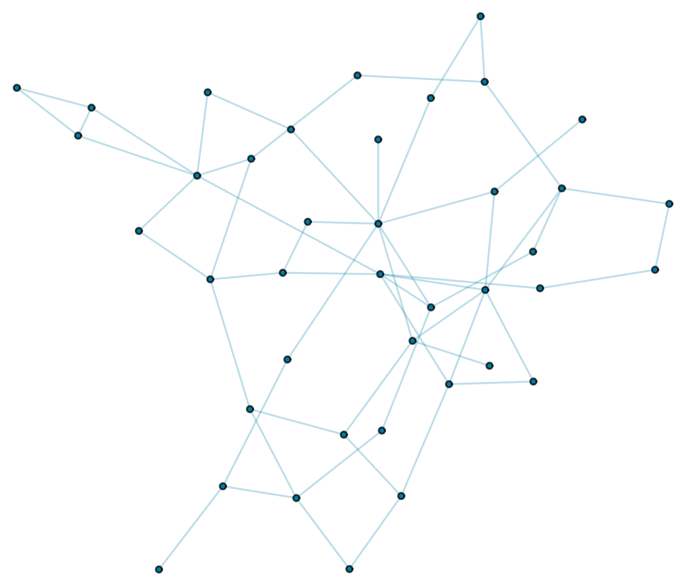

Welcome to the new Markdown publishing workflow! This example post showcases all the content types and formatting options you might want to use when writing your articles.
You can write headings, sub-headings, and standard body text with simple styling:
**bold**). Italic Text:* Wrap text in single asterisks (*italic*) or underscores (_italic_).
Inline Code: Wrap code or terms in backticks (` code `).1. Write the draft in Markdown.
2. Add YAML frontmatter at the top.
3. Commit and push!
Here is a sample table showing various data alignments:
| Item ID | Description | Quantity | Unit Price | Total |
|---|---|---|---|---|
| 101 | Standard Widget with long text description to test responsive wrapping | 2 | $10.00 | $20.00 |
| 102 | Premium Widget | 1 | $45.00 | $45.00 |
| 103 | Deluxe Edition | 5 | $100.00 | $500.00 |
You can create ordered and unordered lists easily:
Write multi-line code blocks with language-specific syntax highlighting (powered by Prism.js):
Sampling and plotting an Erdős-Rényi random graph:
(* Sample and plot an Erdős-Rényi random graph G(n, p) *)
g = RandomGraph[BernoulliGraphDistribution[40, 0.07]];
Graph[g,
VertexSize -> Medium,
VertexStyle -> RGBColor[0.0, 0.48, 0.65],
EdgeStyle -> Directive[Opacity[0.25], RGBColor[0.0, 0.48, 0.65]]]
You can embed images using simple Markdown syntax. By default, the build system automatically wraps them in a srcset and sizes attributes if matching sizes are found on disk under the image's responsive/ directory.
You can specify the image width and height using the =widthxheight syntax (e.g. =600x380 or =600x to specify width only) in the image target brackets:
You can also specify the alignment (left, right, or center) by appending it after the image path or size. The default alignment is center:
This paragraph of text will wrap around the left-aligned image. It showcases how simple it is to lay out dynamic content with varying visual components on your blog using standard Markdown syntax extensions.
You can drop raw HTML blocks directly into the page (e.g. for embeds, customized styling, or video players). The Markdown compiler protects these tags and keeps them as-is:
Enjoy writing!